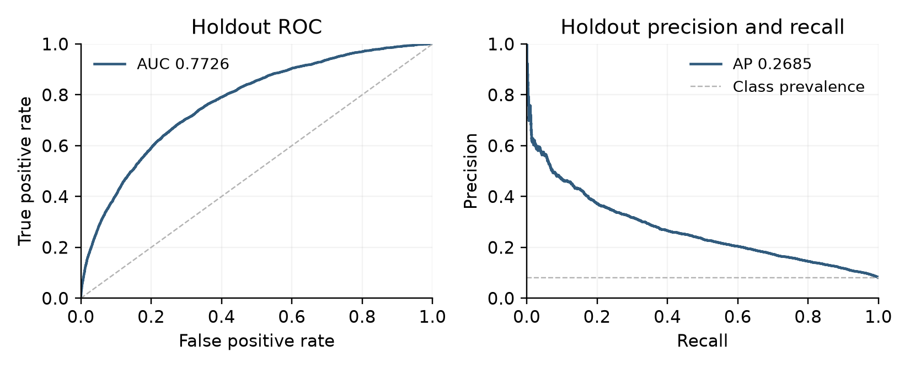
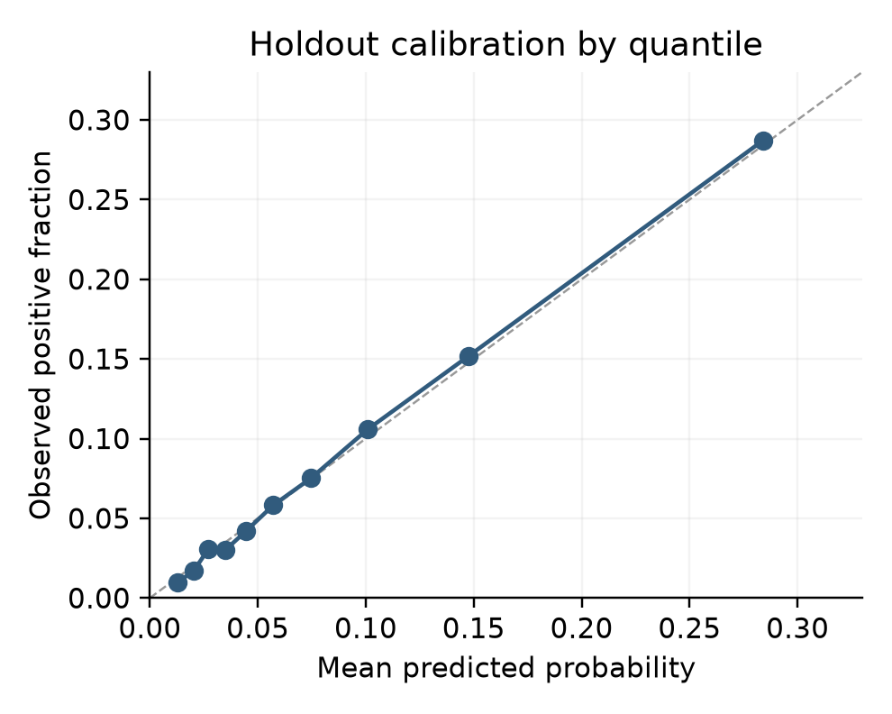

What actually improves
risk prediction?什么真正改善了
风险预测？
Seven configurations, shared validation folds, and a separate holdout. The focus is on understanding the contribution of models and features.七种配置、共用验证划分和独立留出集。重点是理解模型与特征各自带来的贡献。
Do boosted trees improve on logistic regression? What do engineered application features, bureau history, and external scores add?提升树是否优于逻辑回归？申请派生特征、征信历史和外部评分分别增加了什么信息？
This was a team course project. My responsibilities were results analysis, figures, Kaggle submission, and integration of the report, code, and saved outputs. Model training and pipeline implementation were team work.这是团队课程项目。我负责结果分析、图表、Kaggle 提交，以及报告、代码和已有输出的整合。训练与流水线实现属于团队工作。
A comparison designed to be interpretable能够解释差异的对照设计
The archived experiment uses 307,511 labelled applications and bureau history. A stratified 20% holdout is separated from the development set. Seven fixed configurations share five development folds, with preprocessing fitted inside each training fold. The selected model is evaluated on the 61,503-application holdout.已有实验使用 307,511 条有标签申请和征信历史，先分层留出 20% 作为 holdout。七种固定配置共用开发集五折划分，预处理在各训练折内拟合。选中的模型在 61,503 条申请的 holdout 上评估。
Saved holdout ROC-AUC已有 holdout ROC-AUC
Saved holdout average precision已有 holdout 平均精确率
Saved holdout Brier score已有 holdout Brier 分数
These holdout scores are local validation results from the archived experiment. The model was not retrained for this portfolio.这些 holdout 分数来自已有实验的本地验证记录。制作作品集时未重训模型。
Kaggle late submissionKaggle 赛后提交
Public score shown in the screenshot截图中的 Public Score
Private score shown in the screenshot截图中的 Private Score
Submitted after the competition deadline在竞赛截止时间后提交
A user-provided Kaggle submission-page screenshot shows these public and private scores for a late submission to Home Credit Default Risk. The values and labels were checked in the image; this was not a live account check.用户提供的 Kaggle 提交页截图显示，Home Credit Default Risk 的赛后提交获得上述 Public 和 Private 分数。已核对图片中的标签与数值；这不是实时登录账户核验。
The screenshot does not establish a competition rank, an award, an in-competition result, or a link to an exact local model version. The original screenshot is not published here.截图不证明竞赛名次、获奖或比赛期间成绩，也无法与确切的本地模型版本绑定。原截图不在此公开。
External scores have the largest tested effect外部评分带来的变化最大
Adding bureau history yields a modest, consistent gain beyond engineered application features. Removing external scores and their summaries produces the largest AUC change among the tested comparisons.在申请派生特征基础上加入征信历史，带来幅度较小但方向一致的改善。移除外部评分及其汇总后，AUC 变化在已测试的对照中最大。

Open full-size figure ↗查看原尺寸图表 ↗
| Comparison对照 | Mean ΔAUC平均 ΔAUC |
|---|---|
| Raw LightGBM over raw logistic regression原始特征 LightGBM 相对逻辑回归 | +0.0094 |
| Engineered feature bundle added to LightGBMLightGBM 加入派生特征包 | +0.0078 |
| Bureau history added to engineered LightGBM派生特征 LightGBM 加入征信历史 | +0.0045 |
| External scores retained versus removed保留相对移除外部评分及汇总 | +0.0500 |
Ranking quality is only part of the picture排序表现只是评估的一部分

Open full-size figure ↗查看原尺寸图表 ↗

Open full-size figure ↗查看原尺寸图表 ↗
My contribution我的贡献
- Analyzed model comparisons and the selected model’s saved results.分析模型对照和选中模型的已有结果。
- Prepared figures to communicate feature effects, discrimination, and calibration.准备图表，解释特征影响、区分能力与校准表现。
- Handled Kaggle submission and integrated report sections, code, and outputs.负责 Kaggle 提交，并整合报告章节、代码和输出。
- The project report discloses Codex assistance with code and report revision and consistency checks.项目报告披露 Codex 辅助代码、报告修订与一致性检查。
What remains open仍未解决的问题
- A random historical split does not establish performance on future lending cohorts.历史数据的随机划分不能证明对未来贷款群体的表现。
- Removing score features from everyone is not an evaluation of people who actually lack those scores.对全体样本移除评分特征，不等于评估实际缺少评分的人群。
- The engineered features were added as a bundle, so their individual effects are not isolated.派生特征以组合形式加入，尚未分离每项特征的作用。
- No deployment, fairness assessment, or lending policy validation is claimed.本项目不声称已上线，也未完成公平性或放贷策略验证。
A traceable result, not a new run结果可追溯，不等于重新运行
The portfolio review checked saved fold summaries and file consistency between the original experiment and its reorganized package. The revised code package retains the earlier results; its existence is not evidence of a fresh training run. Source data, row-level predictions, identifiers, and model files are not included in this website.作品集审阅核对了已有逐折汇总，以及原始实验和整理版本之间的文件一致性。修订代码包沿用了先前结果，不能据此视为一次新训练。网站不包含源数据、逐行预测、样本标识或模型文件。